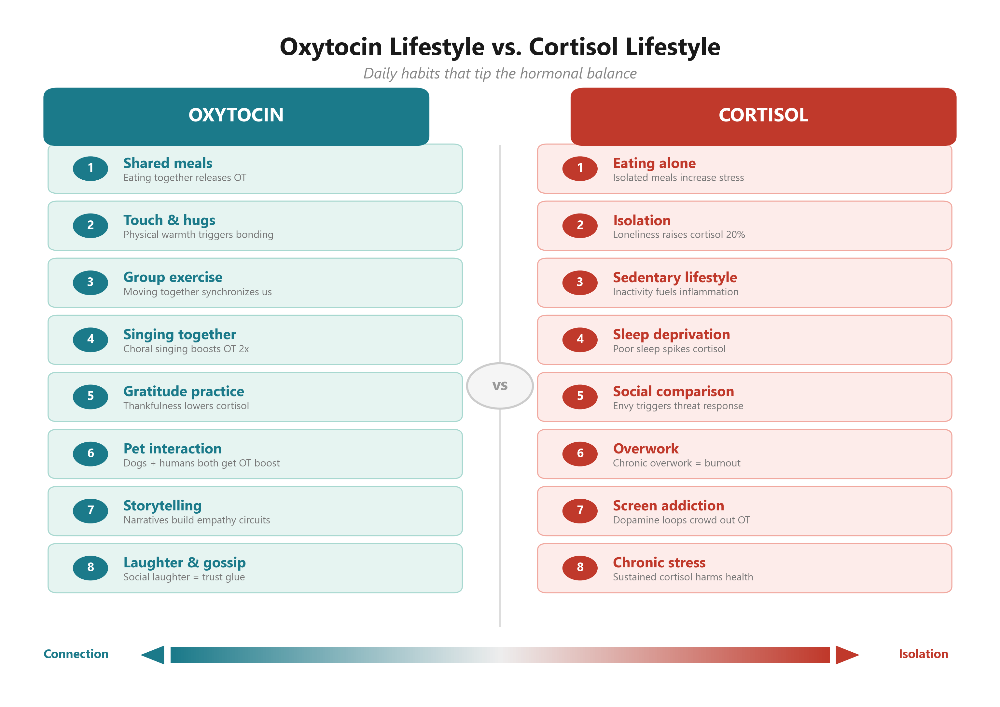

-- Choose the Oxytocin Lifestyle
Stress keeps us alive. Wait — what? Stress keeps us alive? Isn't stress what kills us? In fact, stress itself is not biologically harmful. It is chronic stress that becomes the problem.
Professor Robert M. Sapolsky, the world's foremost expert on stress, explains in his book Why Zebras Don't Get Ulcers how zebras endure the intense stress of being chased by lions without ever developing stomach ulcers. Imagine a zebra facing a lion. What physiological changes would occur?
First, in a life-or-death crisis, let us eliminate the nonessentials. Reproductive function? You are about to be eaten — is mating really a priority? Digestion? You are about to become someone else's dinner — no time for your own. Immune function? Growth? None of these matter right now. What matters is sending every drop of blood to your leg muscles. Blood flow to all other organs must be shut down. Focus and concentrate. To achieve this, heart rate must accelerate and blood pressure must spike.
The hormone that orchestrates these changes is the stress hormone cortisol. Along with cortisol, adrenaline is released, and the sympathetic nervous system fires up. Once the zebra escapes the danger, it lowers stress hormones and adrenaline, activates the parasympathetic nervous system, and allows blood to flow back to its organs.1
Eustress and Distress
Hans Selye, the Canadian endocrinologist known as the "father of stress research," argued in The Stress of Life that moderate stress can actually energize us. While a professor at the University of Montreal, he developed the "general adaptation syndrome," a three-stage theory of the stress response: first, when stress hits, the adrenal medulla releases adrenaline and the adrenal cortex releases cortisol, accelerating breathing, increasing perspiration, and heightening anxiety (alarm reaction). If stress persists, hormonal responses resist the stressor (resistance stage). Finally, when stress subsides, the parasympathetic nervous system activates, initiating relaxation, rest, and recovery (exhaustion stage). Selye clinically demonstrated that failing to eliminate stress quickly can turn it into a health-threatening poison.2
But Selye also made a distinctive claim: while stress can cause disease, it can also play a positive role in life. He coined the term "distress" for negative stress and "eustress" for positive stress. He argued that eustress — the excitement before a first kiss, the anticipation before a big soccer match or concert, the thrill of planning an overseas trip — brings vitality to life. Distress, on the other hand, comes from persistently unpleasant stimuli: the death of a loved one, work pressure, frequent quarrels, the neighbor's noise. Selye advised breaking stress into short intervals with rest in between, shifting one's perspective, and cultivating more eustress. When you do, stress becomes not the root of all illness but a wonderful gift that life offers.3
Modern humans are not going to encounter a tiger or a lion on the street. Unless one escapes from a zoo, the probability is essentially zero. (Though the recent spate of random knife attacks has created a new kind of street-level stress.) So when do modern humans experience the kind of existential threat a zebra feels when facing a lion? At home. At school. At work. In society.
When a student is bullied, or feels the relentless pressure to maintain a place within a social group, cortisol spikes. Research suggests that high stress during adolescence can actually suppress physical growth. For adults, the greatest stressors are likely workplace demands and interpersonal conflicts: relentless performance pressure, workplace harassment, pressure from supervisors, competition, jealousy, envy, and sabotage from colleagues — all of which can produce a stress response comparable to a zebra meeting a lion.
The critical difference is that a zebra's encounter with a lion lasts only seconds or, at most, a few minutes. We experience stress every single day. If you can release work stress through a healthy home life, enjoyable hobbies, and leisure activities, that is ideal. But if there is no one at home to support you, no friend to commiserate with over gossip about a terrible boss, no recreational community to join — that is a serious health threat. And by health, I mean not just physical health but psychological and social health as well.
The secret to transforming distress into eustress is embedding the oxytocin lifestyle into your daily routine. You must find ways to pump oxytocin through your body right now. When you do, cortisol will fall and oxytocin will rise.
The Stress Assassin: Oxytocin
Stress and oxytocin are intimately connected. For starters, the brain regions that release stress hormones and oxytocin are located right next to each other. In fact, stress itself can raise oxytocin. In a healthy individual, when stress strikes, oxytocin rises alongside cortisol, helping to buffer the stress response and bring cortisol levels back down. But when cortisol rises without a corresponding rise in oxytocin, the individual faces a wide range of physical, mental, and social health threats.
This is why the oxytocin lifestyle matters so much. No matter how much we tell ourselves that stress brings productive tension and energy, if stress exceeds our personal threshold and goes unaddressed, the consequences are severe. Chronic stress is the root of all disease.
We must transform our lifestyle into an oxytocin lifestyle. When you encounter stress at school or at work, meet a friend immediately — eat something delicious, talk it out. On weekends, enjoy outdoor sports together. Linger at a cozy cafe over brunch and dish out gossip about your boss. Join clubs and pursue hobbies. Blow off steam. If you have no friends to do this with, do not give up — visit your parents, give them a massage. Join a neighborhood sports club. If exercise is not your thing, sign up for a local cultural class or book club — any community activity where you can connect with new people.
And there is one more indispensable element of the oxytocin lifestyle: spiritual community. Go to a nearby church, clap your hands and sing, listen to a sermon, enjoy a hearty free lunch. If church is not your thing, try a Buddhist temple. Listen to the dharma talk, eat temple food. And while you are there, a light hike and a good sweat will make it even better.
The most important point — which I will elaborate on in the next chapter — is learning to distinguish between what you can change and what you cannot in the circumstances that cause you stress. Change what you can, immediately. If you cannot change your situation, either accept it or actively seek alternatives. For example, even if your boss constantly bullies you and you cannot change jobs, try making an ally of your antagonist. There is even a biblical principle: "Use worldly wealth to gain friends for yourselves" (Luke 16:9). In other words, heap burning coals on the head of your enemy — with kindness.
I had a similar experience myself. When I was in graduate school, there was a coworker who constantly antagonized me, needling me with passive-aggressive remarks. Every encounter with him sent my stress levels skyrocketing. "Should I just beat the living daylights out of him?" I briefly entertained the dark thought, then changed my mind. At Christmas, I gave him a modest gift with a heartfelt card. From that day forward, he was a completely different person. He became one of my closest friends, and we remain in contact to this day.
Of course, this kind of outcome is not common, but when you are stuck in a stressful situation, trying something positive can make all the difference. That is the oxytocin lifestyle. Live this way, and your attitude toward life will shift, your circumstances will change, and eventually, even the situations that torment you will transform.
The Relationship Between Oxytocin and Cortisol
| Oxytocin High | Oxytocin Low | |
|---|---|---|
| Cortisol High | Health Maintained | Health Threatened |
| Cortisol Low | Health Improved | Health Maintained |
End of Part 7